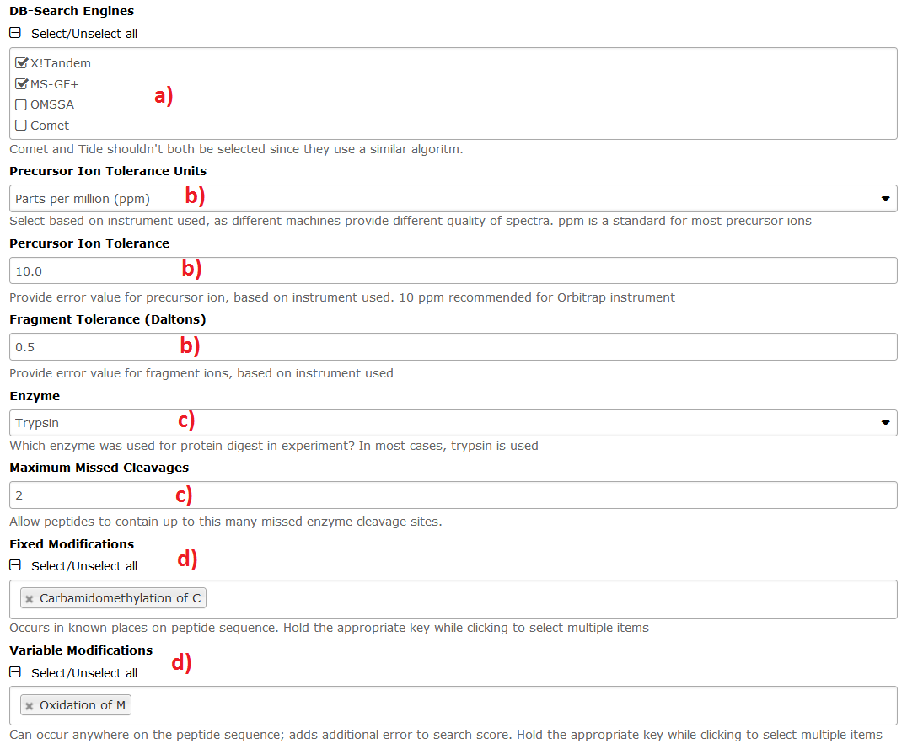
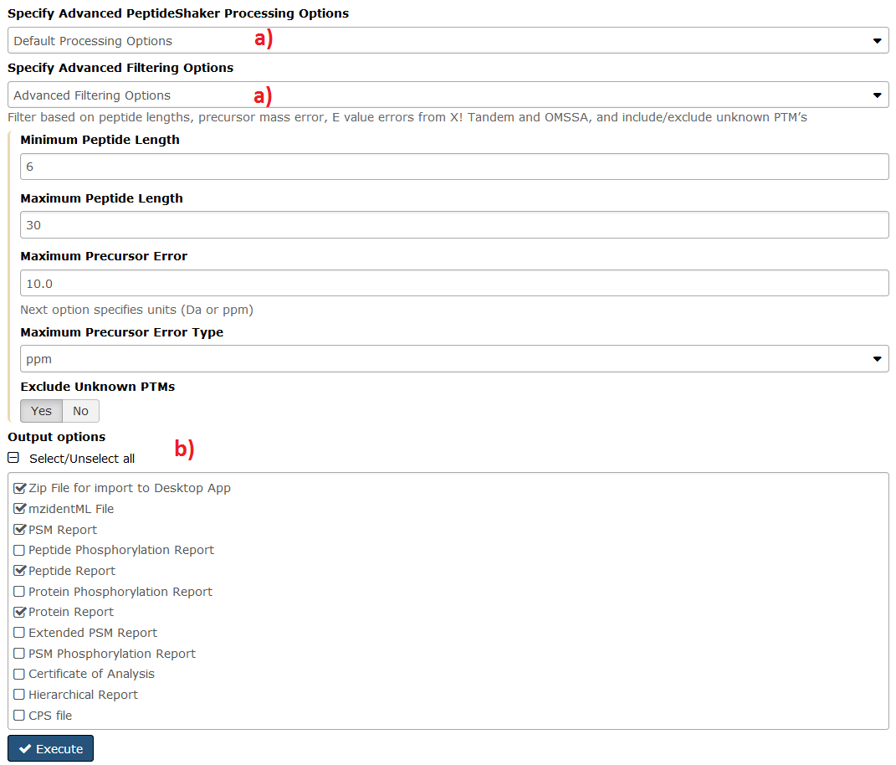

Peptide and Protein ID
Overview
Questions
- How to convert LC-MS/MS raw files?
- How to identify peptides?
- How to identify proteins?
- How to evaluate the results?
Objectives
- Protein identification from LC-MS/MS raw files.
Requirements
Time estimation: 45min
Introduction
Identifying the proteins contained in a sample is an important step in any proteomic experiment. However, in most settings, proteins are digested to peptides before the LC-MS/MS analysis. In this so-called “bottom-up” procedure, only peptide masses are measured. Therefore, protein identification cannot be performed directly from raw data, but is a multi-step process:
- Raw data preparations
- Peptide-to-Spectrum matching
- Peptide inference
- Protein inference
A plethora of different software solutions exists for each step. In this tutorial, we will show how to
use msconvert  and PeakPickerHiRes
and PeakPickerHiRes  for step 1,
Search GUI
for step 1,
Search GUI  and Peptide Shaker
and Peptide Shaker  for the steps 2-4.
for the steps 2-4.
Input data
As an example dataset, we will use an LC-MS/MS analysis of HeLa cell lysate published
in Vaudel et al., 2014, Proteomics. Detailed information
about the dataset can be found on PRIDE.
For step 2 we will use a validated human Uniprot FASTA database without appended decoys.
If you already completed the tutorial on Database Handling
you can use the constructed database before the DecoyDatabase  step. You can find a prepared database, as well as the input proteomics data in different file formats on Zenodo.
step. You can find a prepared database, as well as the input proteomics data in different file formats on Zenodo.
Agenda
In this tutorial, we will deal with:
Preparing raw data
Raw data conversion is the first step of any proteomic data analysis. The most common converter is MSConvert, the format to convert to is mzML. Search GUI takes only mgf format as input, but as we need the mzML format for several other tasks, we will convert to mzML first.
Optional Hands-On: Preparing raw data
This part of the Hands-On section is optional, because it cannot be performed on most GalaxyP instances due to licensing reasons. Therefore, we provide the input data also already converted to
.mgfand.mzMLfile formats. If you choose to omit this part of the Hands-On section, please download the file “qExactive01819_vendor-peakPicking.mzml” from [https://zenodo.org/record/546301/files/qExactive01819_vendor-peakPicking.mzml].
- Create a new history for this Peptide and Protein ID exercise.
- Load the example dataset into your history from this link.
- Rename the dataset to “Test data”.
- Run msconvert
on the test data to convert to the mzML format
Comment: Local Use of MSConvert
The vendor libraries used by MSConvert need a Windows system and is therefore rarely implemented in Galaxy instances. If msconvert
- Run PeakPickerHiRes
Depending on your machine settings, raw data will be generated either in profile mode or centroid mode. For most peptide search engines, the data have to be converted to centroid mode, a process called “peak picking”. Machine vendors offer algorithms to extract peaks from profile raw data. This is implemented in msconvert
- Run FileConverter
- Change the Datatype of the FileConverter
icon.
Peptide and Protein Identification
MS/MS experiments identify peptides by isolating them and subsequently colliding them with a gas for fragmentation. This method generates a spectrum of peptide fragment masses for each isolated peptide - an MS2 spectrum. To find out the peptide sequences, the MS2 spectrum is compared to a theoretical spectrum generated from a protein database. This step is called peptide-to-spectrum (also: spectrum-to-sequence) matching. Accordingly, a peptide that is successfully matched to a sequence is termed PSM (Peptide-Spectrum-Match). There can be multiple PSMs per peptide, if the peptide was fragmented several times. Different peptide search engines have been developed to fulfill the matching procedure.
It is generally recommended to use more than one peptide search engine and use the combined results for the final peptide inference (Shteynberg et al., 2013, Mol. Cell. Proteomics). Again, there are several software solutions for this, e.g. iProphet (TPP) or ConsensusID (OpenMS). In this tutorial we will use Search GUI  , as it can automatically search the data using several search engines. Its partner tool Peptide Shaker
, as it can automatically search the data using several search engines. Its partner tool Peptide Shaker  is then used to combine and evaluate the search engine results.
is then used to combine and evaluate the search engine results.
In bottom-up proteomics, it is necessary to combine the identified peptides to proteins. This is not a trivial task, as proteins are redundant to some degree. Thus, not every peptide can be assigned to only one protein. Luckily, the Peptide Shaker  already takes care of protein inference and even gives us some information on validity of the protein IDs. We will discuss validation in a later step of this tutorial.
already takes care of protein inference and even gives us some information on validity of the protein IDs. We will discuss validation in a later step of this tutorial.
- Copy the prepared protein database from the tutorial “Database handling” into your current history by using the multiple history view or upload the ready-made database from this link.
- Open Search GUI
DB-Search Engines:X!TandemandMS-GF+. Add theFixed Modifications:Carbamidomethylation of Cand theVariable Modifications:Oxidation of M, then clickExecute.- Run Peptide Shaker
Zip File for import to Desktop App,mzidentML File,PSM Report,Peptide Report,Protein Report. You can find a detailed description of possible Peptide Shaker outputs in the comment below.
Questions:
- How many peptides were identified? How many proteins?
- How many peptides with oxidized methionine were identified?
Click to view answers
- You should have identified 3,325 peptides and 1,170 proteins.
- 328 peptides contain an oxidized methionine (MeO). To get to this number, you can use ***Select***
In this tutorial, we ran both Search GUI
- Search GUI
Search GUI bundles numerous sequence database search software tools for matching MS/MS to peptide sequences within a database. Describing the parameters for all of these programs is beyond the scope of this tutorial, but some of the key parameters for this software are described below:
a) Database search programs. A number of popular sequence database searching programs are available, and can be selected by the user. The more selected, the more processor time is necessary; however, matching MS/MS spectra to peptide sequence with more programs provides more confidence in results. In practice, 2-3 programs used offers high confidence while keeping analysis times reasonable.
b) Data quality parameters. Values that reflect the performance of the instrument used can be entered. These include mass accuracy measures for both precursor ions and the resulting MS/MS fragment ions. For the workflow provided here, these have been set with default values for high resolution Orbitrap mass spectrometer instrumentation.
c) Enzyme cleavage. Although almost all proteomic samples are digested to peptides by trypsin, some other enzymes are used occasionally. Enzymes do not cut at 100 % of the possible cleavage sites, so you might want to allow searching for peptides where a few cleavage sites were missed.
d) Covalent modifications. A variety of covalent modifications are built in to the Search GUI parameters. Typing the modification into the field (e.g. “oxidation”) brings up the available modifications of that type to specific side chains or the n- or c-terminus of the protein and/or peptide.

- Peptide Shaker
The Galaxy implementation of Peptide Shaker is fairly simple in terms of parameters available to the user:
a) Processing and filtering options. If desired, users can select “Advanced” processing or filtering options. The processing options allow a customized level of false discovery rate (FDR) to be set for peptide and protein identifications, while the filtering options offer selection of length of peptides to be considered, and thresholds for mass accuracy. The default, validated values for processing and filtering are set in stored workflows, and follow community standards (e.g. 1% FDR levels, etc.).
b) Outputs. Peptide Shaker offers a variety of outputs which a user can select. A compressed file (.zip) can be made containing all information needed to view the results in the standalone Peptide Shaker viewer; a peptide spectrum match (PSM) report file, which provides all relevant information on all peptide sequences matched to MS/MS spectra in the analysis; a mzidentML file can be created that contains all peptide sequence matching information and can be utilized by compatible downstream software. Other outputs are focused on the inferred proteins identified from the PSMs, as well as phosphorylation reports, relevant in a phosphoprotoemics experiment has been undertaken. The Certificate of Analysis provides details on all the parameters used by both Search GUI and Peptide Shaker in the analysis. All outputs can be downloaded from the Galaxy instance to the local computer if desired.

Analysis of Contaminants
The FASTA database used for the peptide to spectrum matching contained some entries that were not expected to stem from the HeLa cell lysate, but are common contaminations in LC-MS/MS samples. The main reason to add those is to avoid false assignment of the spectra to other proteins. However, it also enables you to check for contaminations in your samples. CAVE: in human samples, many proteins that are common contaminants may also stem from the real sample. The real source can never be determined for sure.
- Run Select
- Remove all contaminants from your protein list by running Select
- Which contaminants did you identify? Where do these contaminations come from?
- What other sources of contaminants exist?
- How many mycoplasma proteins did you identify? Does this mean that the analyzed HeLa cells were infected with mycoplasma?
Click to view answers
- TRY_BOVIN is bovine trypsin. It was used to degrade the proteins to peptides. ALBU_BOVIN is bovine serum albumin. It is added to cell culture medium in high amounts.
- Contaminants often stem from the experimenter, these are typically keratins or other high-abundant human proteins. Basically any protein present in the room of the mass spectrometer might get into the ion source, if it is airborne. As an example, sheep keratins are sometimes found in proteomic samples, stemming from clothing made of sheep wool.
- There should be five mycoplasma proteins in your protein list. However, all of them stem from different mycoplasma species. Also, every protein was identified by one peptide only. You can see this in column 17-19 of your output. These observations make it very likely that we are facing false positives here. As we were allowing for a false discovery rate of 1 %, we would expect 12 false positive proteins in our list. False positives are distributed to random peptides in the FASTA database. Our database consists of about 20,000 human proteins and 4,000 mycoplasma proteins. Therefore, we would expect 20 % of all false positives to match to mycoplasma proteins.
Evaluation of Peptide and Protein IDs
Peptide Shaker  provides you with validation results for the identified PSM, peptides and proteins. It classifies all these IDs in the categories “Confident” or “Doubtful”. On each level, the meaning of these terms differs to some extent:
provides you with validation results for the identified PSM, peptides and proteins. It classifies all these IDs in the categories “Confident” or “Doubtful”. On each level, the meaning of these terms differs to some extent:
- PSMs are marked as “Doubtful” when the measured MS2 spectrum did not fit well to the theoretical spectrum.
- Peptides have a combined scoring of their PSMs. They are marked as “Doubtful”, when the score is below a set threshold. The threshold is defined by the false discovery rate (FDR).
- Proteins are marked as “Doubtful”, when they were identified by only a single peptide or when they were identified solely by “Doubtful” peptides.
- Remove all “Doubtful” proteins from your protein list by running Select
- How to exclude mycoplasma proteins?
- How many “Confident” non-contaminant proteins were identified?
Click to view answers
- Add another ***Select***
- You should have identified 582 human non-contaminant proteins that were validated to be "Confident".<\li> </ol> </details>
Premade Workflow
A premade workflow for this tutorial can be found here
Further Reading
Key points
- LC-MS/MS raw files have to be converted before using GalaxyP on most GalaxyP servers.
- SearchGUI can be used for running several peptide search engines at once.
- PeptideShaker can be used to combine and evaluate the results, and to perform protein inference.
Useful literature
Useful information regarding this type of analysis with descriptions and paper references for the tools used in this tutorial, and literature for this analysis techniques and interpretations can be found here.
 Congratulations on successfully completing this tutorial!
Congratulations on successfully completing this tutorial!
This material is the result of a collaborative work. Thanks the Galaxy Training Network and all the contributors !Please take a moment and provide your feedback on this tutorial. Your feedback will help guide and improve future revisions to this tutorial. Feedback Form
Feedback
Found a typo? Something is wrong in this tutorial? Edit it on GitHub.